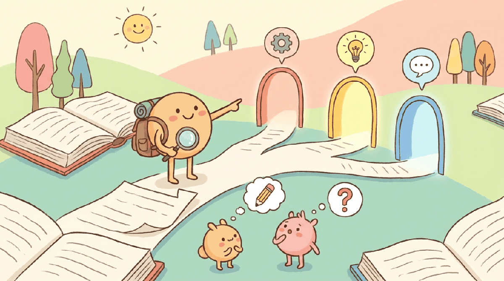

There are four reasonable ways to read this book and they look like different books. The structure supports all four; this page tells you which mode fits which goal and where in the appendices the detailed routes live.
Four Ways to Read It
If you are learning the field from scratch and have a semester or roughly a hundred reading hours, the linear path was designed for you. Concepts compound: attention in Part I returns in alignment in Part IV, decoding in Part I returns in agents in Part VI, evaluation in Part VIII returns in product strategy in Part X. The Self-Check questions at the end of each section let you gauge whether to move on. Plan on 60-100 reading hours plus lab time; the Researcher / Graduate Student route in Appendix B is the linear-with-research-emphasis variant.
If you are reading to ship a specific thing (RAG bot, agent, fine-tuned model, multimodal product, AI gateway), use one of the eight pathways in Appendix B: Reading Pathways. Each pathway names the destination, lists the chapters in order, gives a realistic time estimate (weekend to several weeks), and tells you what you can do at the end. Most pathways skip 60-80% of the book; that is the point.
If you are teaching, Appendix A: Course Syllabi has five tested tracks with week-by-week schedules: undergraduate engineering, undergraduate research, graduate engineering, graduate research, and a professional bootcamp. Each track maps to a 14-week semester, names the assignments and lab milestones, and tells you which intermediate projects from Appendix E (Intermediate Projects) and capstone tracks from Appendix F pair with the syllabus. The war stories in Appendix G (Air Canada, Chevy of Watsonville, Bing/Sydney, Samsung leak, fintech runaway bill) supply five named production failures with discussion prompts when you need a Tuesday seminar topic.
If something is on fire in production, the book is also a reference. is a lookup table mapping common engineering tasks (hallucination drift, GPU memory cliff, tokenizer mismatch, eval flakiness, prompt-injection vector) to the chapter and section that addresses the failure mode. Use site search (top of every page, via Pagefind) for terms you remember imprecisely.
The Callout Catalogue
Every chapter uses the same set of callout boxes so you know what to expect at a glance. The five most consequential are below; the full set appears on the actual chapter pages.
Frames the current topic in the context of the full LLM stack. Includes cross-references to earlier and later chapters. Opens every chapter.
The load-bearing idea of a section. If you only remember one thing from the section, this is it.
A pitfall that has cost real time or real money: silent tokenizer mismatches, GPU memory cliffs, non-deterministic outputs, eval contamination.
Appears after a from-scratch implementation, showing the one-liner equivalent in Hugging Face, LangChain, or another popular framework. The from-scratch lab is for understanding; this is for shipping.
Closes every chapter. Maps open questions and 2024-2026 papers worth reading, updated each edition. Especially useful if you are picking a thesis topic or scanning for what is not yet settled.
Additional callouts (Note for clarifications, Tip for practitioner shortcuts, Algorithm for language-neutral pseudocode, Practical Example for a worked scenario, Exercise for hands-on problems with expandable answers, Self-Check for end-of-section comprehension questions) follow the same pattern: the visual style tells you what kind of content you are about to read.
Code Conventions
Code uses Python 3.10+ throughout. Inline code appears in monospace; longer listings appear in syntax-highlighted blocks; output blocks show expected results. All code is tested and runnable, with fixed random seeds and pinned dependency versions; the lab repository linked at the end of each chapter contains the runnable files. The book assumes a recent PyTorch (2.4+) and the current major versions of Hugging Face transformers, datasets, and peft. Where a 2024-2026 model is referenced by name (DeepSeek-R1, Claude 4, GPT-5-omni, Llama 4 Scout, Veo 3, Sora 2, pi-0.5, Genie 3), the code targets the public API or open-weight release available at the time of writing.
Start Here
- New to ML, reading linearly: Begin at Chapter 0: ML and PyTorch Foundations. Assumes only Python, builds every prerequisite.
- Comfortable with transformers, want to use LLMs now: Jump to Chapter 13: LLM APIs and follow the RAG Engineer or Agent Builder pathway in Appendix B.
- ML engineer ready to train and adapt: Begin at Chapter 7: Pre-training and Scaling Laws and follow the ML Practitioner Transitioning to LLMs pathway in Appendix B.
- Founder or PM: Begin at Part X: Building LLM and Agent Products and reach back into earlier chapters as the pathway from Chapter 0 (Section 0.1) (Reading Pathways) indicates. The strategy chapters stand alone.
- Instructor designing a course: Pick a track from Appendix A: Course Syllabi and use the weekly schedule as your syllabus.
What Comes Next
The next page is brief: who wrote the book and why. Then the front matter ends and the book begins. Proceed to FM.6 About the Authors, or jump directly to Chapter 0.